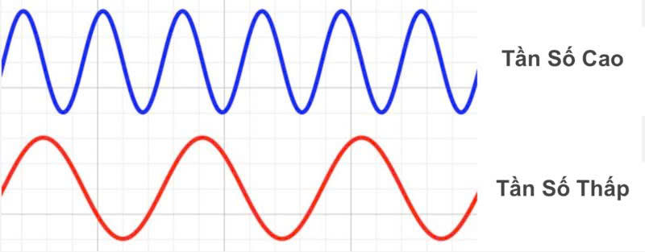

I. Độ to và biên độ của sóng âm
1. Biên độ dao động của nguồn âm, sóng âm
Biên độ dao động là khoảng cách từ vị trí cân bằng đến vị trí xa nhất của dao động.
2. Độ to của âm
Độ to của âm phụ thuộc vào biên độ dao động.
- Sóng âm có biên độ dao động càng lớn thì âm nghe càng to.
- Sóng âm có biên độ dao động càng nhỏ thì âm nghe càng nhỏ.
II. Độ cao và tần số của sóng âm
1. Tần số
Tần số là số dao động mà vật thực hiện trong một giây.
Đơn vị của tần số là héc (Hz).
Ví dụ: Trong 1 giây, vật thực hiện được 20 dao động thì tần số là 20 Hz.
Tai người nghe được âm có tần số từ 20 Hz đến 20 000 Hz.
2. Độ cao của âm
Độ cao của âm phụ thuộc vào tần số.
- Tần số càng lớn thì âm càng cao (âm bổng).
- Tần số càng nhỏ thì âm càng thấp (âm trầm).

Ghi nhớ
- Biên độ dao động quyết định độ to của âm.
- Biên độ càng lớn thì âm càng to.
- Tần số là số dao động trong một giây.
- Đơn vị của tần số là Hz.
- Tần số càng lớn thì âm càng cao, tần số càng nhỏ thì âm càng thấp.
- Tai người nghe được âm có tần số từ 20 Hz đến 20 000 Hz.